Wearable Devices Predicting Users’ Behaviour On Machine Learning Analysis#
Author: Eugene Gu
Course Project, UC Irvine, Math 10, Spring 25
I would like to post my notebook on the course’s website. Yes
Introduction#
Commercial wearable devices, such as smartwatches and fitness trackers, have become increasingly popular tools for monitoring physical activity. Equipped with a variety of sensors, these devices can track parameters such as heart rate, step count, distance traveled, and calories burned. The widespread adoption of wearable devices presents a significant opportunity for monitoring and analyzing physical activity on a large scale.
These devices not only provide users with real-time feedback to help maintain motivation and achieve fitness goals, but they also collect valuable data that can be leveraged for health research and epidemiological studies. By analyzing the data captured by wearable devices, researchers can gain insights into physical activity patterns and broader health trends across diverse populations.
This study aims to explore: (1) the ability of two commercial wearable devices, Fitbit Charge HR2 and Apple Watch Series 2, to accurately predict physical activities; and (2) the performance of various advanced machine learning techniques in achieving this goal.
The Dataset Overview#
# Load data
import pandas as pd
apple_df = pd.read_csv("data_for_aw.csv")
fitbit_df = pd.read_csv("data_for_fb.csv")
The dataset contains the following features:
age：Integer values representing participant’s age in years. (range: 18 ~ 56)
gender：Binary values representing participant’s gender (0 = female, 1 = male). (range: 0 ~ 1)
height：Participant’s height in centimeters. (range: 143.0 ~ 191.0 cm)
weight：Participant’s weight in kilograms. (range: 43.0 ~ 115.0 kg)
Steps_LE：Number of steps per minute. (range: 1.0 ~ 1714.0 steps/min)
Heart_LE：Average heart rate per minute. (range: 33.0 ~ 194.33 bpm)
Calories_LE：Number of calories burned per minute. (range: 0.056 ~ 29.242 cal/min)
Distance_LE：Distance traveled per minute, in meters. (range: 0.00044 ~ 1.08779 meters/min)
EntropyHeartPerDay_LE：Entropy of heart rate measurements over a day (measure of heart rate variability). (range: 5.119 ~ 6.408)
EntropyStepsPerDay_LE：Entropy of steps measurements over a day (measure of variability in steps). (range: 5.655 ~ 6.409)
RestingHeartrate_LE：Resting heart rate (beats per minute). (range: 34.15 ~ 97.0 bpm)
CorrelationHeartrateSteps_LE：Correlation between heart rate and steps. (range: -1.0 ~ 1.0)
NormalizedHeartrate_LE：Normalized value of heart rate. (range: -31.53 ~ 128.5)
Intensity_LE：Intensity of physical activity. (range: -0.271 ~ 1.298)
SDNormalizedHR_LE：Standard deviation of normalized heart rate. (range: 0.0032 ~ 56.138)
StepsXDistance_LE：Product of steps and distance (proxy for physical exertion). (range: 0.00069 ~ 1721.42162)
activity_trimmed：Original activity label with 6 classes: Lying, Sitting, Self Pace Walk, Running 3 METs, Running 5 METs, Running 7 METs.
The original dataset was collected from 49 participants using Apple Watch Series 2 and Fitbit Charge HR2 during a 65-minute activity protocol [Kaggle, n.d.]. With these features in mind, it is helpful to gain an idea of their importance by predicting users’ physical activities. More specifically, we will visualize how the data in different ways to preprocess the dataset. To implement the prediction in an effective way, I decide to change the activity_trimmed to activity_category, which only includes two categories: Stationary and Moving. Stationary includes original activity label with Lying, Sitting, and Moving includes original activity label with Self Pace Walk, Running 3 METs, RUNNING 5 METs, Running 7 METs.
# Map activity_category
activity_mapping = {
'Lying': 'stationary',
'Sitting': 'stationary',
'Self Pace walk': 'moving',
'Running 3 METs': 'moving',
'Running 5 METs': 'moving',
'Running 7 METs': 'moving'
}
apple_df['activity_category'] = apple_df['activity_trimmed'].map(activity_mapping)
fitbit_df['activity_category'] = fitbit_df['activity_trimmed'].map(activity_mapping)
Visualization of Apple Watch Data#
import matplotlib.pyplot as plt
import seaborn as sns
# Define numerical features we want to plot
numerical_features = [
'age',
'gender',
'height',
'weight',
'Applewatch.Steps_LE',
'Applewatch.Heart_LE',
'Applewatch.Calories_LE',
'Applewatch.Distance_LE',
'EntropyApplewatchHeartPerDay_LE',
'EntropyApplewatchStepsPerDay_LE',
'RestingApplewatchHeartrate_LE',
'CorrelationApplewatchHeartrateSteps_LE',
'NormalizedApplewatchHeartrate_LE',
'ApplewatchIntensity_LE',
'SDNormalizedApplewatchHR_LE',
'ApplewatchStepsXDistance_LE'
]
# Plot numerical features vs activity_category
plt.figure(figsize=(16, 18))
for i, feature in enumerate(numerical_features):
plt.subplot(6, 3, i + 1)
sns.histplot(data=apple_df, x=feature, hue='activity_category', kde=True, bins=20, palette='Set1')
plt.title(f'{feature} Distribution')
plt.tight_layout()
plt.show()
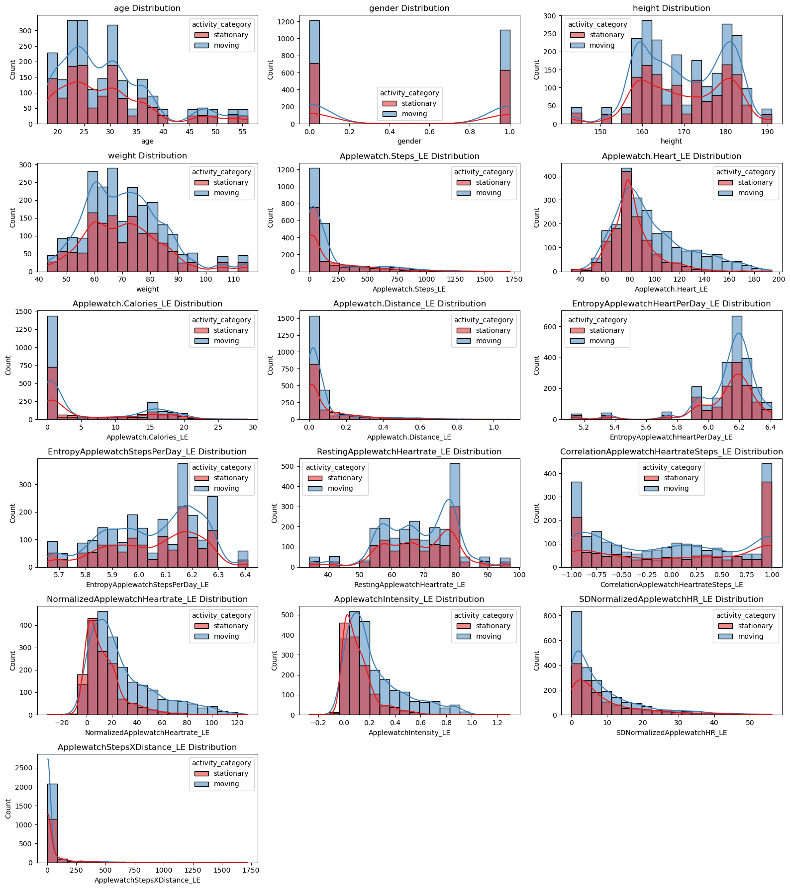
# Correlation matrix
apple_corr = apple_df.select_dtypes(include=['float64', 'int64']).corr()
plt.figure(figsize=(12, 10))
sns.heatmap(apple_corr, annot=True, cmap='coolwarm', fmt='.2f')
plt.title('Correlation Matrix - Apple Watch')
plt.tight_layout()
plt.show()
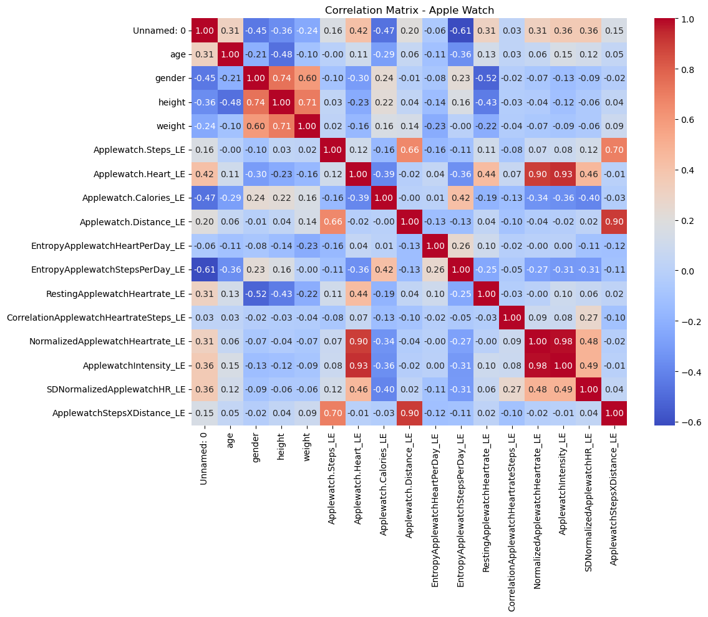
Visualization of Fitbit Data#
# Define numerical features we want to plot
fitbit_numerical_features = [
'age',
'gender',
'height',
'weight',
'Fitbit.Steps_LE',
'Fitbit.Heart_LE',
'Fitbit.Calories_LE',
'Fitbit.Distance_LE',
'EntropyFitbitHeartPerDay_LE',
'EntropyFitbitStepsPerDay_LE',
'RestingFitbitHeartrate_LE',
'CorrelationFitbitHeartrateSteps_LE',
'NormalizedFitbitHeartrate_LE',
'FitbitIntensity_LE',
'SDNormalizedFitbitHR_LE',
'FitbitStepsXDistance_LE'
]
# Plot numerical features vs activity_category (Fitbit)
plt.figure(figsize=(16, 18))
for i, feature in enumerate(fitbit_numerical_features):
plt.subplot(6, 3, i + 1) # adjust grid based on number of features
sns.histplot(data=fitbit_df, x=feature, hue='activity_category', kde=True, bins=20, palette='Set1')
plt.title(f'{feature} Distribution')
plt.tight_layout()
plt.show()
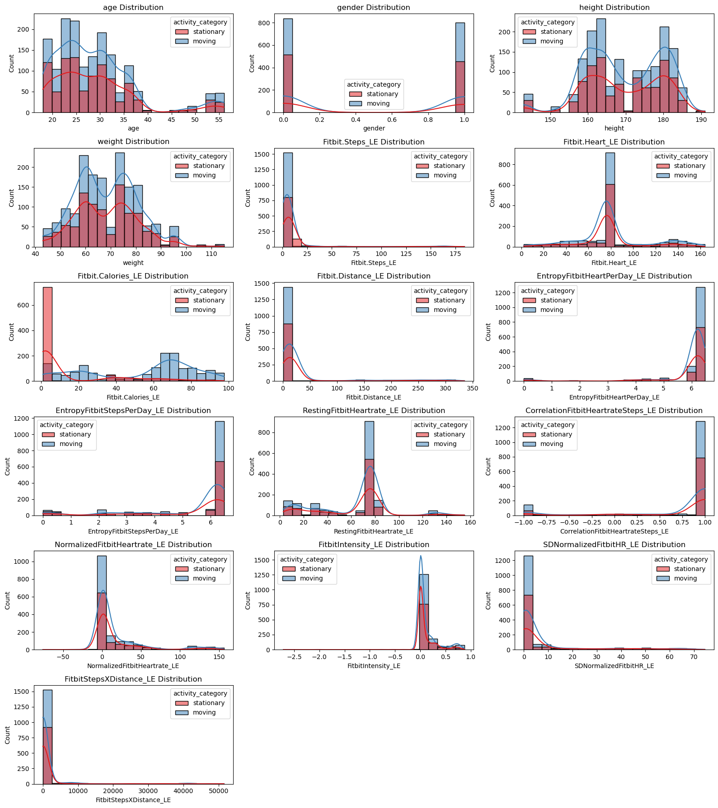
# Correlation matrix for Fitbit
fitbit_corr = fitbit_df.select_dtypes(include=['float64', 'int64']).corr()
plt.figure(figsize=(12, 10))
sns.heatmap(fitbit_corr, annot=True, cmap='coolwarm', fmt='.2f')
plt.title('Correlation Matrix - Fitbit')
plt.tight_layout()
plt.show()
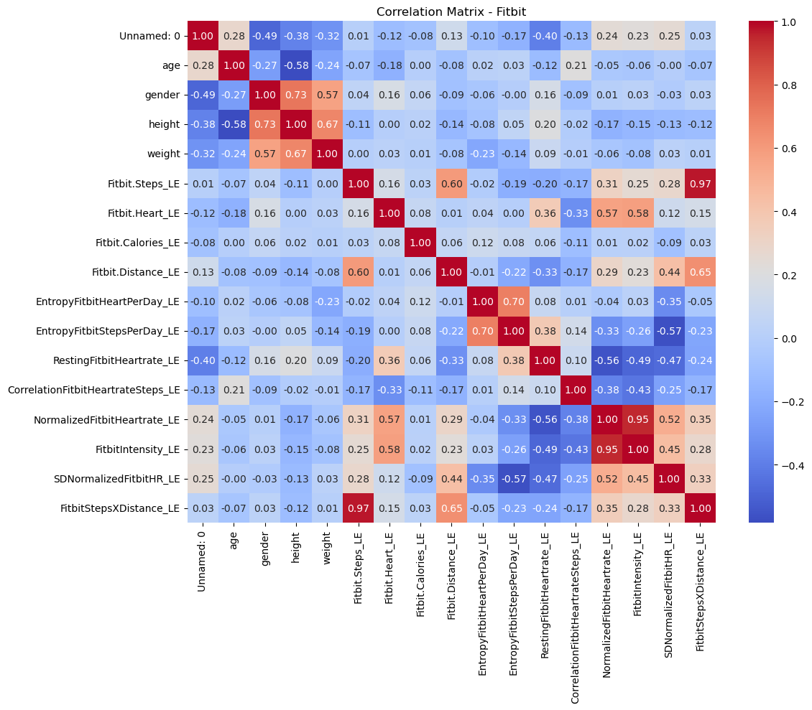
Preprocessing#
Before training machine learning models, we performed feature selection to remove features that are unlikely to contribute meaningfully to the prediction task or are redundant.
Based on exploratory data analysis and domain knowledge, the following features were removed from the dataset:
Height and weight: BMI, which could be more influential to the prediction, replace them because height and weight are correlated.
EntropyHeartPerDay_LE: Distributions between stationary and moving activities showed little difference.
EntropyStepsPerDay_LE: Distributions between stationary and moving activities showed little difference.
RestingHeartrate_LE: It is a relatively static value, which is not indicative of current activity.
CorrelationHeartrateSteps_LE: Distributions between stationary and moving activities showed little difference.
NormalizedHeartrate_LE: Highly correlated with Heart_LE or Intensity_LE, removed to avoid redundancy.
SDNormalizedHR_LE: Distributions between stationary and moving activities showed little difference.
activity_trimmed: It was transformed into the binary activity_category variable for this analysis (‘stationary’ and ‘moving’).
By removing these features, we aimed to simplify the model and reduce potential noise, focusing only on the most informative features for predicting activity category.
# Apple Watch and Fitbit BMI preprocessing
apple_df['BMI'] = apple_df['weight'] / ((apple_df['height'] / 100) ** 2)
fitbit_df['BMI'] = fitbit_df['weight'] / ((fitbit_df['height'] / 100) ** 2)
# Features to drop for Apple Watch
features_to_drop_aw = [
'height', 'weight',
'EntropyApplewatchHeartPerDay_LE',
'EntropyApplewatchStepsPerDay_LE',
'RestingApplewatchHeartrate_LE',
'CorrelationApplewatchHeartrateSteps_LE',
'NormalizedApplewatchHeartrate_LE',
'SDNormalizedApplewatchHR_LE',
'activity_trimmed'
]
# Apple Watch Updated Data
X_apple = apple_df.drop(columns=features_to_drop_aw + ['Unnamed: 0', 'activity_category'])
y_apple = apple_df['activity_category'].map({'stationary': 0, 'moving': 1})
# Features to drop for Fitbit
features_to_drop_fb = [
'height', 'weight',
'EntropyFitbitHeartPerDay_LE',
'EntropyFitbitStepsPerDay_LE',
'RestingFitbitHeartrate_LE',
'CorrelationFitbitHeartrateSteps_LE',
'NormalizedFitbitHeartrate_LE',
'SDNormalizedFitbitHR_LE',
'activity_trimmed'
]
# Fitbit Updated Data
X_fitbit = fitbit_df.drop(columns=features_to_drop_fb + ['Unnamed: 0', 'activity_category'])
y_fitbit = fitbit_df['activity_category'].map({'stationary': 0, 'moving': 1})
Revised Dataset Overview#
print(X_apple)
print(y_apple)
age gender Applewatch.Steps_LE Applewatch.Heart_LE \
0 20 1 10.771429 78.531302
1 20 1 11.475325 78.453390
2 20 1 12.179221 78.540825
3 20 1 12.883117 78.628260
4 20 1 13.587013 78.715695
... ... ... ... ...
3651 46 0 163.000000 157.250000
3652 46 0 6.666667 157.307692
3653 46 0 6.750000 156.250000
3654 46 0 6.791667 158.090909
3655 46 0 6.750000 157.230769
Applewatch.Calories_LE Applewatch.Distance_LE ApplewatchIntensity_LE \
0 0.344533 0.008327 0.138520
1 3.287625 0.008896 0.137967
2 9.484000 0.009466 0.138587
3 10.154556 0.010035 0.139208
4 10.825111 0.010605 0.139828
... ... ... ...
3651 0.701500 0.075200 0.822898
3652 0.701500 0.075475 0.823508
3653 0.732000 0.075695 0.812325
3654 0.612500 0.077270 0.831789
3655 0.671000 0.075965 0.822695
ApplewatchStepsXDistance_LE BMI
0 0.089692 23.171769
1 0.102088 23.171769
2 0.115287 23.171769
3 0.129286 23.171769
4 0.144088 23.171769
... ... ...
3651 12.257600 28.783069
3652 0.503167 28.783069
3653 0.510941 28.783069
3654 0.524792 28.783069
3655 0.512764 28.783069
[3656 rows x 9 columns]
0 0
1 0
2 0
3 0
4 0
..
3651 1
3652 1
3653 1
3654 1
3655 1
Name: activity_category, Length: 3656, dtype: int64
print(X_fitbit)
print(y_fitbit)
age gender Fitbit.Steps_LE Fitbit.Heart_LE Fitbit.Calories_LE \
0 20 1 1.0 132.000000 1.0
1 20 1 1.0 132.777778 1.0
2 20 1 1.0 129.888889 1.0
3 20 1 1.0 129.142857 1.0
4 20 1 1.0 134.555556 3.5
... ... ... ... ... ...
2603 46 0 1.0 35.000000 20.5
2604 46 0 1.0 35.000000 20.5
2605 46 0 1.0 35.000000 20.5
2606 46 0 1.0 35.000000 20.5
2607 46 0 1.0 35.000000 20.5
Fitbit.Distance_LE FitbitIntensity_LE FitbitStepsXDistance_LE \
0 1.0 0.022587 1.0
1 1.0 0.033767 1.0
2 1.0 -0.007757 1.0
3 1.0 -0.018480 1.0
4 1.0 0.059320 1.0
... ... ... ...
2603 1.0 0.000000 1.0
2604 1.0 0.000000 1.0
2605 1.0 0.000000 1.0
2606 1.0 0.000000 1.0
2607 1.0 0.000000 1.0
BMI
0 23.171769
1 23.171769
2 23.171769
3 23.171769
4 23.171769
... ...
2603 28.783069
2604 28.783069
2605 28.783069
2606 28.783069
2607 28.783069
[2608 rows x 9 columns]
0 0
1 0
2 0
3 0
4 1
..
2603 1
2604 1
2605 1
2606 1
2607 1
Name: activity_category, Length: 2608, dtype: int64
Model Evaluation Function#
from sklearn.metrics import (
accuracy_score,
precision_score,
recall_score,
f1_score,
classification_report,
confusion_matrix,
)
def evaluate_model(name, model, X_test, y_test):
# 1. Predict & predict_proba
y_pred = model.predict(X_test)
if hasattr(model, "predict_proba"):
y_score = model.predict_proba(X_test)[:, 1]
else:
y_score = model.decision_function(X_test)
# 2. Compute metrics
acc = accuracy_score(y_test, y_pred)
prec = precision_score(y_test, y_pred)
rec = recall_score(y_test, y_pred)
f1 = f1_score(y_test, y_pred)
# 3. Print summary
print(f"=== {name} ===")
print(f"Accuracy : {acc:.3f}")
print(f"Precision: {prec:.3f}")
print(f"Recall : {rec:.3f}")
print(f"F1-score : {f1:.3f}")
print("\nClassification Report:")
print(classification_report(y_test, y_pred, digits=3))
# 4. Confusion matrix
cm = confusion_matrix(y_test, y_pred)
plt.figure(figsize=(4,4))
sns.heatmap(cm, annot=True, fmt="d", cbar=False,
xticklabels=["pred 0","pred 1"],
yticklabels=["true 0","true 1"],
cmap="Blues")
plt.title(f"{name} — Confusion Matrix")
plt.ylabel("True label")
plt.xlabel("Predicted label")
plt.show()
Binary Logistic Regression#
Binary logistic regression is a form of regression used when the target variable is binary, which means it has only two possible outcomes (such as yes/no, positive/negative, or category 0/1)[El-Habil, 2012]. Unlike linear regression that predicts continuous results, binary logistic regression models the probability that the observed values belong to the positive class (usually marked as 1). It achieves this by applying the sigmoid (logical) function to the linear combination of input features, which converts the result into probabilities between 0 and 1. The relationship between this probability and the explanatory variables is defined as:
The sigmoid function is defined as:
which maps any real-valued input ( z ) to the range (0, 1), allowing the model to represent probabilities.
In this project, the application of binary logistic regression through the LogisticRegression model was employed to classify activity states as either stationary or moving.
Binary Logistic Regression - Apple Watch Model#
# Prepare data
from sklearn.model_selection import train_test_split
from sklearn.linear_model import LogisticRegression
from sklearn.preprocessing import StandardScaler
# Split Apple Watch data
X_train_aw, X_test_aw, y_train_aw, y_test_aw = train_test_split(X_apple, y_apple, test_size=0.2, random_state=0, stratify=y_apple)
# Feature scaling
scaler_aw = StandardScaler()
X_train_aw_scaled = scaler_aw.fit_transform(X_train_aw)
X_test_aw_scaled = scaler_aw.transform(X_test_aw)
# Train logistic regression
clf_aw = LogisticRegression(max_iter=1000)
clf_aw.fit(X_train_aw_scaled, y_train_aw)
# Evaluate Model
evaluate_model(
name="Binary Logistic Regression (Apple Watch)",
model=clf_aw,
X_test=X_test_aw_scaled,
y_test=y_test_aw
)
=== Binary Logistic Regression (Apple Watch) ===
Accuracy : 0.686
Precision: 0.709
Recall : 0.856
F1-score : 0.775
Classification Report:
precision recall f1-score support
0 0.610 0.392 0.477 268
1 0.709 0.856 0.775 464
accuracy 0.686 732
macro avg 0.660 0.624 0.626 732
weighted avg 0.673 0.686 0.666 732
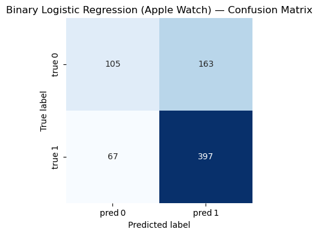
Binary Logistic Regression - Fitbit Model#
# Split Fitbit data
X_train_fb, X_test_fb, y_train_fb, y_test_fb = train_test_split(X_fitbit, y_fitbit, test_size=0.2, random_state=0, stratify=y_fitbit)
# Feature scaling
scaler_fb = StandardScaler()
X_train_fb_scaled = scaler_fb.fit_transform(X_train_fb)
X_test_fb_scaled = scaler_fb.transform(X_test_fb)
# Train logistic regression
clf_fb = LogisticRegression(max_iter=1000)
clf_fb.fit(X_train_fb_scaled, y_train_fb)
# Evaluate Model
evaluate_model(
name="Binary Logistic Regression (Fitbit)",
model=clf_fb,
X_test=X_test_fb_scaled,
y_test=y_test_fb
)
=== Binary Logistic Regression (Fitbit) ===
Accuracy : 0.793
Precision: 0.844
Recall : 0.823
F1-score : 0.833
Classification Report:
precision recall f1-score support
0 0.713 0.742 0.727 194
1 0.844 0.823 0.833 328
accuracy 0.793 522
macro avg 0.778 0.783 0.780 522
weighted avg 0.795 0.793 0.794 522
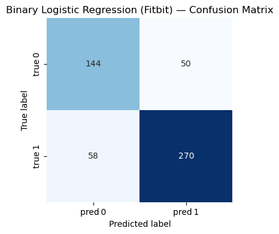
KNN#
The KNN algorithm is a simple but powerful method that can be used for classification and regression tasks in supervised learning. In the context of classification, KNN operates by identifying k training examples that are closest to the given input based on the selected distance metric (usually the Euclidean distance) [Zhang, 2025]. Then, it assigns the input to the most common class among these neighbors. KNN is a non-parametric and instance-based method, which means it has no explicit assumptions about the underlying data distribution. Instead, it stores the entire training dataset and uses it directly during prediction. The choice of k has a significant impact on the behavior of the model: a smaller k value may lead to high variance and overfitting, while a larger k value may result in high bias and underfitting. Because KNN relies on distance calculation, it is particularly sensitive to feature scaling - to achieve the best performance, it is usually necessary to standardize or normalize features. In this project, KNN can predict the activity category (stationary or moving) by analyzing the distance of data points from Fitbit or Apple Watch sensors in the feature space.
KNN - Apple Watch Model#
from sklearn.neighbors import KNeighborsClassifier
X_train_aw, X_test_aw, y_train_aw, y_test_aw = train_test_split(
X_apple, y_apple,
test_size=0.2,
random_state=0,
stratify=y_apple
)
# Initialize KNN
knn_aw = KNeighborsClassifier(n_neighbors=3)
# Train KNN
knn_aw.fit(X_train_aw, y_train_aw)
# Evaluate Model
evaluate_model(
name="K-Nearest Neighbors (Apple Watch)",
model=knn_aw,
X_test=X_test_aw,
y_test=y_test_aw
)
=== K-Nearest Neighbors (Apple Watch) ===
Accuracy : 0.777
Precision: 0.805
Recall : 0.856
F1-score : 0.830
Classification Report:
precision recall f1-score support
0 0.720 0.642 0.679 268
1 0.805 0.856 0.830 464
accuracy 0.777 732
macro avg 0.762 0.749 0.754 732
weighted avg 0.774 0.777 0.774 732
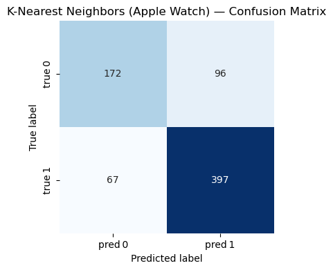
KNN - Fitbit Model#
from sklearn.neighbors import KNeighborsClassifier
X_train_fb, X_test_fb, y_train_fb, y_test_fb = train_test_split(
X_fitbit, y_fitbit,
test_size=0.2,
random_state=0,
stratify=y_fitbit
)
# Initialize KNN
knn_fb = KNeighborsClassifier(n_neighbors=3)
# Train KNN
knn_fb.fit(X_train_fb, y_train_fb)
# Evaluate Model
evaluate_model(
name="K-Nearest Neighbors (Fitbit)",
model=knn_fb,
X_test=X_test_fb,
y_test=y_test_fb
)
=== K-Nearest Neighbors (Fitbit) ===
Accuracy : 0.864
Precision: 0.870
Recall : 0.921
F1-score : 0.895
Classification Report:
precision recall f1-score support
0 0.851 0.768 0.808 194
1 0.870 0.921 0.895 328
accuracy 0.864 522
macro avg 0.861 0.844 0.851 522
weighted avg 0.863 0.864 0.862 522
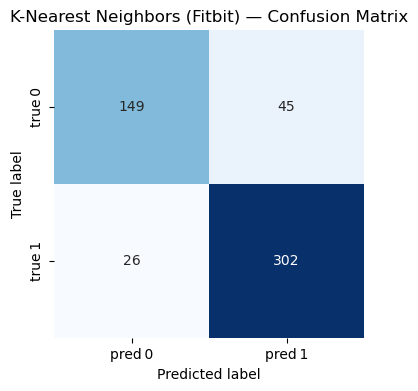
Decision Tree#
Decision tree algorithm is a supervised learning method widely used in classification and regression tasks. In classification problems, decision trees model data by learning a series of if-then-else rules based on eigenvalues, and these eigenvalues divide the data into increasingly pure subsets [Suthaharan and Suthaharan, 2016]. The tree structure consists of nodes (test eigenvalues), branches (representing test results), and leaves (assigning the final class labels). This model is established through a process called recursive segmentation. At each step, the algorithm selects the features and segmentation points that can best separate the data based on criteria such as Gini impurities or information gain. Decision trees are highly interpretable and require minimal preprocessing because they are insensitive to feature scaling and can handle both numerical and categorical data. However, if the trees grow too deep, they may be prone to overfitting and capturing the noise in the training data instead of the general pattern; Techniques such as pruning or setting constraints (such as the maximum depth) are usually used to alleviate this situation.
We will use the Gini Impurity metric to determine the optimal splits. Gini Impurity measures the probability of incorrectly classifying a randomly chosen element from the dataset if it were randomly labeled according to the distribution of labels in the subset:
where ( p_i ) is the probability of a data point belonging to class ( i ).
In this project, a decision tree classifier can be used to distinguish between stationary and moving activities by learning decision rules based on Apple Watch or Fitbit sensor features.
Decision Trees - Apple Watch Model#
from sklearn.tree import DecisionTreeClassifier
X_train_aw, X_test_aw, y_train_aw, y_test_aw = train_test_split(
X_apple, y_apple,
test_size=0.2,
random_state=0,
stratify=y_apple
)
# Initialize and train Decision Tree
dt_aw = DecisionTreeClassifier(random_state=0)
dt_aw.fit(X_train_aw, y_train_aw)
# Evaluate Model
evaluate_model(
name="Decision Tree (Apple Watch)",
model=dt_aw,
X_test=X_test_aw,
y_test=y_test_aw
)
=== Decision Tree (Apple Watch) ===
Accuracy : 0.816
Precision: 0.843
Recall : 0.871
F1-score : 0.857
Classification Report:
precision recall f1-score support
0 0.763 0.720 0.741 268
1 0.843 0.871 0.857 464
accuracy 0.816 732
macro avg 0.803 0.795 0.799 732
weighted avg 0.814 0.816 0.814 732
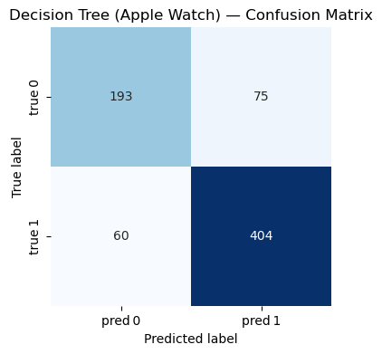
Decision Trees - Fitbit Model#
X_train_fb, X_test_fb, y_train_fb, y_test_fb = train_test_split(
X_fitbit, y_fitbit,
test_size=0.2,
random_state=0,
stratify=y_fitbit
)
# Initialize and train Decision Tree
dt_fb = DecisionTreeClassifier(random_state=0)
dt_fb.fit(X_train_fb, y_train_fb)
# Evaluate Model
evaluate_model(
name="Decision Tree (Fitbit)",
model=dt_fb,
X_test=X_test_fb,
y_test=y_test_fb
)
=== Decision Tree (Fitbit) ===
Accuracy : 0.885
Precision: 0.896
Recall : 0.924
F1-score : 0.910
Classification Report:
precision recall f1-score support
0 0.864 0.820 0.841 194
1 0.896 0.924 0.910 328
accuracy 0.885 522
macro avg 0.880 0.872 0.876 522
weighted avg 0.884 0.885 0.884 522
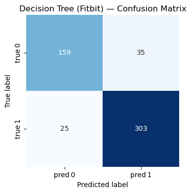
Random Forest#
Random forest is an ensemble learning method used for both classification and regression tasks. They consist of a collection of randomized base regression trees. Each tree is built using a different random subset of the training data and a random subset of features [Biau, 2012]. The outputs of these individual trees are then aggregated to form the final prediction. In this study, the features include variables such as Steps, Heart Rate, Calories, and more, derived from wearable devices.
The final aggregated regression estimate is computed as:
In this project, a random forest classifier can be used to distinguish between stationary and moving activities by aggregating decision rules from multiple randomized decision trees based on Apple Watch or Fitbit sensor features.
Random Forest - Apple Watch Model#
from sklearn.ensemble import RandomForestClassifier
X_train_aw, X_test_aw, y_train_aw, y_test_aw = train_test_split(
X_apple, y_apple,
test_size=0.2,
random_state=0,
stratify=y_apple
)
# Initialize and train Random Forest with 500 trees
rf_aw = RandomForestClassifier(n_estimators=500, random_state=0)
rf_aw.fit(X_train_aw, y_train_aw)
# Evaluate Model
evaluate_model(
name="Random Forest (Apple Watch)",
model=rf_aw,
X_test=X_test_aw,
y_test=y_test_aw
)
=== Random Forest (Apple Watch) ===
Accuracy : 0.866
Precision: 0.884
Recall : 0.907
F1-score : 0.896
Classification Report:
precision recall f1-score support
0 0.832 0.795 0.813 268
1 0.884 0.907 0.896 464
accuracy 0.866 732
macro avg 0.858 0.851 0.854 732
weighted avg 0.865 0.866 0.865 732
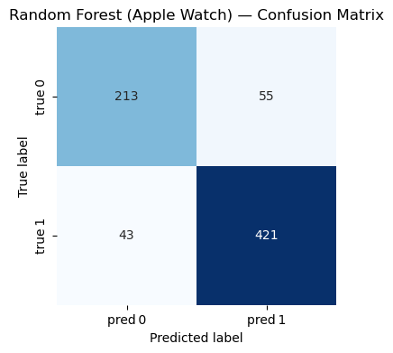
Random Forest - Fitbit Model#
X_train_fb, X_test_fb, y_train_fb, y_test_fb = train_test_split(
X_fitbit, y_fitbit,
test_size=0.2,
random_state=0,
stratify=y_fitbit
)
# Initialize and train Random Forest with 500 trees
rf_aw = RandomForestClassifier(n_estimators=500, random_state=0)
rf_aw.fit(X_train_fb, y_train_fb)
# Evaluate Model
evaluate_model(
name="Random Forest (Fitbit)",
model=rf_aw,
X_test=X_test_fb,
y_test=y_test_fb
)
=== Random Forest (Fitbit) ===
Accuracy : 0.910
Precision: 0.905
Recall : 0.957
F1-score : 0.930
Classification Report:
precision recall f1-score support
0 0.920 0.830 0.873 194
1 0.905 0.957 0.930 328
accuracy 0.910 522
macro avg 0.912 0.894 0.901 522
weighted avg 0.911 0.910 0.909 522
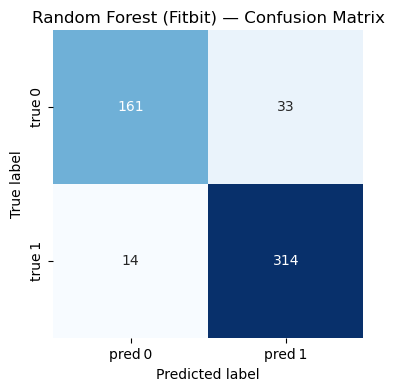
Conclusion#
The results of this study demonstrate that commercial wearable devices, particularly the Fitbit Charge HR2, are more capable of predicting users’ physical activity accurately. Among the four models tested, the random forest model achieved the highest accuracy for both devices. This suggests that the ensemble learning approach of random forests— which aggregates predictions from multiple decision trees— is especially well-suited for this type of predictive analysis.
However, the study has several limitations. First, it was conducted on a convenience sample of 49 participants, which may not be representative of the broader population. The relatively small sample size and limited population diversity constrain the generalizability of the findings to all potential users. Second, the study evaluated only two specific models of wearable devices. The results may not extend to other models or brands, as these may differ in sensor features and data accuracy.
Another limitation lies in the quality of the data collected by the wearable devices. Prediction accuracy is highly dependent on sensor data, and any inaccuracies or inconsistencies in sensor readings can significantly affect model performance. For example, the dataset contained possible errors in the Apple Watch Series 2 data, such as an abnormally low average resting heart rate. Due to these concerns, this type of data was excluded from the machine learning analyses.
To address these limitations, future studies should recruit a larger and more diverse sample of participants. Expanding the sample will help ensure that the results are more representative and generalizable to a wider population. Additionally, future research should include multiple models from different manufacturers. This will enable comparisons of sensor characteristics and data accuracy across devices, providing a more comprehensive understanding of their predictive capabilities. Finally, future studies should consider integrating data from multiple sources to cross-validate the accuracy of wearable devices. For instance, incorporating additional sensors or external measurement tools, such as chest-strap heart rate monitors, could help verify the readings obtained from wearable devices.
Reference#
[Biau, 2012] Biau, G. (2012). Analysis of a random forests model. The Journal of Machine Learning Research, 13(1):1063–1095.
[El-Habil, 2012] El-Habil, A. M. (2012). An application on multinomial logistic regression model. Pakistan journal of statistics and operation research, pages 271–291.
[Kaggle, n.d.] Kaggle. (n.d.). Apple Watch and Fitbit Data. Retrieved from https://www.kaggle.com/datasets/aleespinosa/apple-watch-and-fitbit-data.
[OpenAI, 2025] OpenAI. (2025). ChatGPT. Retrieved from https://chatgpt.com/.
[Suthaharan and Suthaharan, 2016] Suthaharan, S. and Suthaharan, S. (2016). Decision tree learning. Ma- chine Learning Models and Algorithms for Big Data Classification: Thinking with Examples for Effective Learning, pages 237–269.
[Zhang, 2025] Zhang, R. (2025). Class Lecture Notes for Math 10, Spring 2025. Retrieved from https://rayzhangzirui.github.io/math10sp25/notes/notes_intro.html.